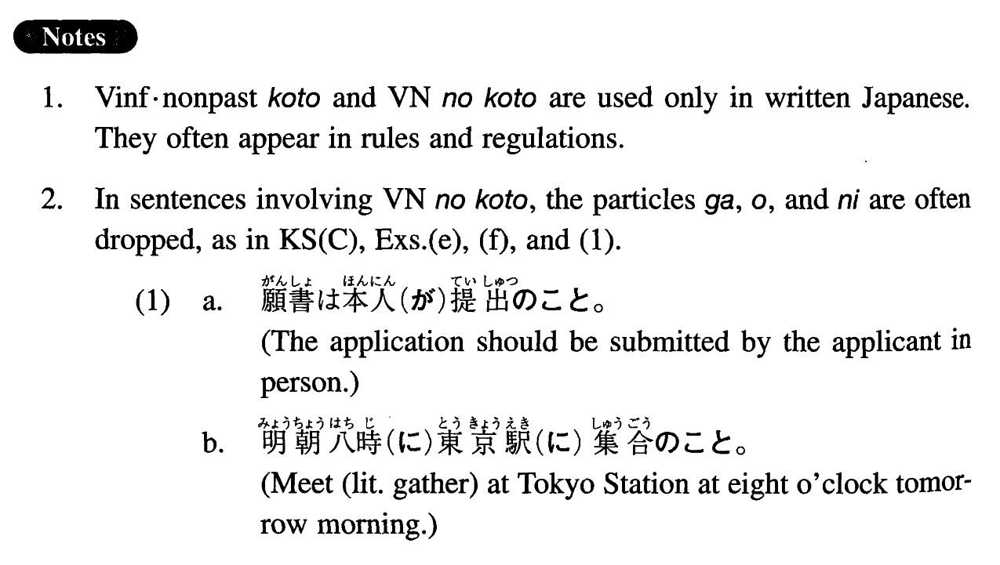

こと (I. 135)
- (ksa).
- 発表は十五分以内で行うこと。
- Each presentation should be completed (literally: done) within fifteen minutes.
- (ksb).
- プールサイドを走らないこと。
- Do not run on the pool deck.
- (ksc).
- 詳細は二十三ページ（を）参照のこと。
- See page 23 for details.
- (a).
- 私語は慎むこと。
- Refrain from whispering.
- (b).
- 先に必ずテープを聞くこと。
- Be sure to listen to the tape beforehand.
- (c).
- 辞書は見ないこと。
- You may not consult any dictionaries.
- (d).
- 裸足で歩き回らないこと。
- Do not walk around barefoot.
- (e).
- 弁当（を）持参のこと。
- Bring your own lunch.
- (f).
- 制服（を）着用のこと。
- Wear uniforms.
